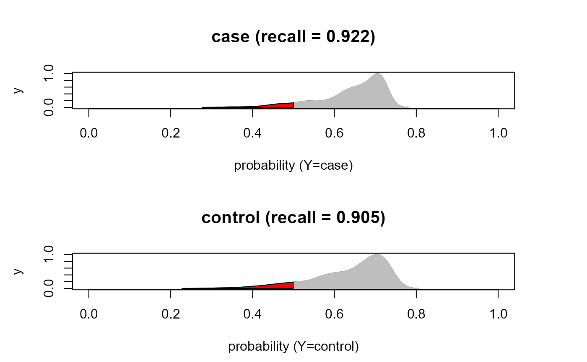

This function builds a report showing the main classification metrics. It provides an overview of key evaluation metrics like precision, recall, F1-score, accuracy, Matthew's correlation coefficient (mcc) and support (testing size) for each class in the dataset and averages (macro or weighted) for all classes.
Arguments
- yobs
A vector with the true target variable values.
- yhat
A matrix with the predicted target variables values.
- CM
An optional (external) confusion matrix CxC.
- verbose
A logical value (default = FALSE). If TRUE, the confusion matrix is printed on the screen, and if C=2, the density plots of the predicted probability for each group are also printed.
- ...
Currently ignored.
Value
A list of 3 objects:
"CM", the confusion matrix between observed and predicted counts.
"stats", a data.frame with the classification evaluation statistics.
"cls", a data.frame with the predicted probabilities, predicted labels and true labels of the categorical target variable.
Details
Given one vector with the true target variable labels, and the a matrix with the predicted target variable values for each class, a series of classification metrics is computed. For example, suppose a 2x2 table with notation
| Predicted | ||
| Observed | Yes Event | No Event |
| Yes Event | A | C |
| No Event | B | D |
The formulas used here for the label = "Yes Event" are:
$$pre = A/(A+B)$$ $$rec = A/(A+C)$$ $$F1 = (2*pre*rec)/(pre+rec)$$ $$acc = (A+D)/(A+B+C+D)$$ $$mcc = (A*D-B*C)/sqrt((A+B)*(C+D)*(A+C)*(B+D))$$
Metrics analogous to those described above are calculated for the label "No Event", and the weighted average (averaging the support-weighted mean per label) and macro average (averaging the unweighted mean per label) are also provided.
References
Sammut, C. & Webb, G. I. (eds.) (2017). Encyclopedia of Machine Learning and Data Mining. New York: Springer. ISBN: 978-1-4899-7685-7
Author
Barbara Tarantino barbara.tarantino@unipv.it
Examples
# \donttest{
# Load Sachs data (pkc)
ig<- sachs$graph
data<- sachs$pkc
data<- transformData(data)$data
#> Conducting the nonparanormal transformation via shrunkun ECDF...done.
group<- sachs$group
#...with train-test (0.5-0.5) samples
set.seed(123)
train<- sample(1:nrow(data), 0.5*nrow(data))
#...with a categorical (as.factor) variable (C=2)
outcome<- factor(ifelse(group == 0, "control", "case"))
res<- SEMml(ig, data[train, ], outcome[train], algo="rf")
#> DAG conversion : TRUE
#> Running SEM model via ML...
#> done.
#>
#> RF solver ended normally after 11 iterations
#>
#> logL:-28.264333 srmr:0.064595
pred<- predict(res, data[-train, ], outcome[-train], verbose=TRUE)
#> amse r2 srmr
#> 0.69813257 0.30186743 0.06919075
yobs<- outcome[-train]
yhat<- pred$Yhat[ ,levels(outcome)]
cls<- classificationReport(yobs, yhat)
cls$CM
#> pred
#> yobs case control
#> case 426 36
#> control 40 381
cls$stats
#> precision recall f1 accuracy mcc support
#> case 0.9141631 0.9220779 0.9181034 0.9139298 0.827449 462
#> control 0.9136691 0.9049881 0.9093079 0.9139298 0.827449 421
#> macro avg 0.9139161 0.9135330 0.9137057 0.9139298 0.827449 883
#> weighted avg 0.9139275 0.9139298 0.9139099 0.9139298 0.827449 883
#> support_prop
#> case 0.5232163
#> control 0.4767837
#> macro avg 1.0000000
#> weighted avg 1.0000000
head(cls$cls)
#> case control pred yobs
#> 1 0.4530052 0.5469948 control control
#> 2 0.3715234 0.6284766 control control
#> 3 0.2788011 0.7211989 control control
#> 4 0.4437142 0.5562858 control control
#> 5 0.3386615 0.6613385 control control
#> 6 0.2799941 0.7200059 control control
#...with predicted probabiliy density plots, if C=2
cls<- classificationReport(yobs, yhat, verbose=TRUE)
#> pred
#> yobs case control
#> case 426 36
#> control 40 381
#>

#...with a categorical (as.factor) variable (C=3)
group[1:400]<- 2; table(group)
#> group
#> 0 1 2
#> 453 913 400
outcome<- factor(ifelse(group == 0, "control",
ifelse(group == 1, "case1", "case2")))
res<- SEMml(ig, data[train, ], outcome[train], algo="rf")
#> DAG conversion : TRUE
#> Running SEM model via ML...
#> done.
#>
#> RF solver ended normally after 12 iterations
#>
#> logL:-31.155319 srmr:0.077561
pred<- predict(res, data[-train, ], outcome[-train], verbose=TRUE)
#> amse r2 srmr
#> 0.74211577 0.25788423 0.08338864
yobs<- outcome[-train]
yhat<- pred$Yhat[ ,levels(outcome)]
cls<- classificationReport(yobs, yhat)
cls$CM
#> pred
#> yobs case1 case2 control
#> case1 414 18 30
#> case2 14 109 85
#> control 16 93 104
cls$stats
#> precision recall f1 accuracy mcc support
#> case1 0.9324324 0.8961039 0.9139073 0.7100793 0.5314694 462
#> case2 0.4954545 0.5240385 0.5093458 0.7100793 0.5314694 208
#> control 0.4748858 0.4882629 0.4814815 0.7100793 0.5314694 213
#> macro avg 0.6342576 0.6361351 0.6349115 0.7100793 0.5314694 883
#> weighted avg 0.7191269 0.7100793 0.7142974 0.7100793 0.5314694 883
#> support_prop
#> case1 0.5232163
#> case2 0.2355606
#> control 0.2412231
#> macro avg 1.0000000
#> weighted avg 1.0000000
head(cls$cls)
#> case1 case2 control pred yobs
#> 1 0.3013243 0.3147069 0.3839688 control case2
#> 2 0.2550408 0.2985409 0.4464183 control case2
#> 3 0.1743354 0.4132468 0.4124178 case2 case2
#> 4 0.3040700 0.3518330 0.3440970 case2 case2
#> 5 0.2269532 0.3563240 0.4167228 control case2
#> 6 0.1831267 0.4307936 0.3860797 case2 case2
# }